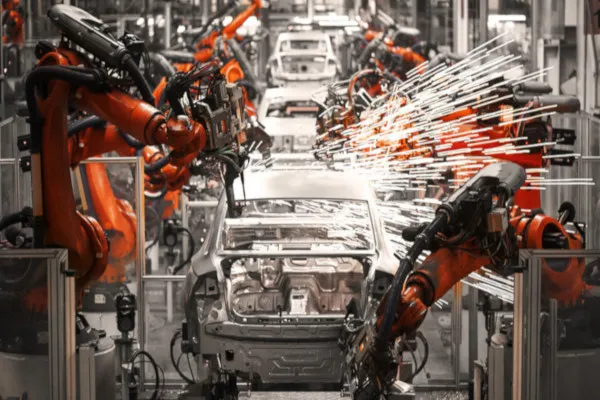

A Terceira Revolução Industrial, também conhecida como Revolução Técnico-Científica ou Revolução Digital, começou na segunda metade do século XX e continua até os dias atuais. Diferente das duas primeiras fases, essa revolução foi marcada pela introdução de novas tecnologias de informação e comunicação, automação industrial e avanços significativos nas áreas de biotecnologia, nanotecnologia e energias renováveis.
Os avanços tecnológicos foram impulsionados pelos desenvolvimentos na eletrônica, especialmente com a criação de computadores, chips semicondutores e circuitos integrados. A partir dos anos 1970, a invenção dos microprocessadores tornou possível que os computadores se tornassem menores, mais rápidos e acessíveis. Essa automação industrial, juntamente com o uso de robôs em fábricas, transformou o setor de produção, reduzindo a necessidade de trabalho humano em várias áreas, enquanto aumentava a eficiência e a velocidade de produção.

Nos anos 1990, a internet revolucionou a maneira como a informação é compartilhada globalmente, facilitando a troca instantânea de dados e interconectando negócios, educação, entretenimento e comunicação pessoal. Essa nova era tecnológica também trouxe avanços significativos na biotecnologia, especialmente na genética, que possibilitaram a criação de novas terapias médicas e melhorias na agricultura através da engenharia genética. Além disso, a nanotecnologia permitiu a manipulação de materiais em níveis atômicos, resultando em inovações em medicina, eletrônica e ciência dos materiais.
Um dos focos principais dessa fase é a substituição dos combustíveis fósseis por energias renováveis, como solar e eólica, em uma tentativa de reduzir os impactos ambientais e combater o aquecimento global.
As mudanças sociais e econômicas decorrentes da Terceira Revolução Industrial foram profundas. A automação e a digitalização provocaram a substituição de muitos empregos manuais por máquinas e sistemas computacionais, levando ao surgimento de novas profissões na área de tecnologia, enquanto empregos tradicionais desapareceram. Isso criou uma demanda crescente por profissionais especializados em ciências da computação, engenharia e biotecnologia, tornando a capacitação tecnológica essencial para a inserção no mercado de trabalho.